流光（LumenLight）使用教程
流光是一个 AI 绘画工作台：无限画布 + ComfyUI 工作流 + LLM 对话绘图。 本教程从启动到进阶，覆盖画布的全部功能。按左侧目录跳转阅读。
1 · 快速开始
启动
- 绿色版用户：解压后双击
start-server.bat即可—— 项目已内置 Node 运行时（runtime/node.exe）和全部依赖， 无需安装任何环境； - 开发者：首次使用先安装依赖（
npm install），再启动后端 （node server.js，默认端口 8080）； - 浏览器打开
http://localhost:8080，即可进入画布。
连接 ComfyUI
流光的 Comfy 生图能力依赖本地 ComfyUI（默认地址 127.0.0.1:8188，
可用环境变量 COMFY_API_URL 修改）。启动 ComfyUI 后，打开右侧面板，
头部的状态灯变绿即表示连接正常。
2 · 界面总览
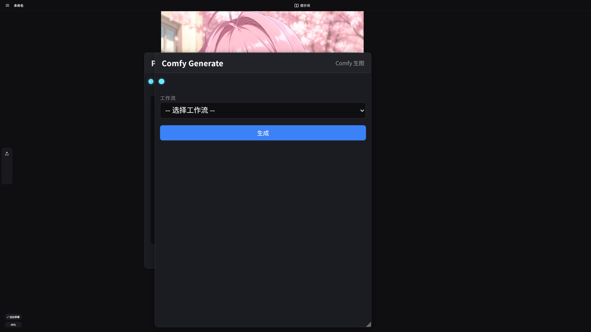
- 左上角 ☰ 文件菜单：打开画布 / 新建画布 / 保存画布 / 另存为 / 设置 / 帮助；
- 顶栏：画布名称、自动保存时间、右侧「提示词」按钮开关右侧面板；
- 无限画布：所有图片与节点的工作区；
- 右侧面板：可在「Comfy 提示词」与「LLM 对话框」两种模式间切换；
- 左下角视图控制：自适应屏幕按钮 + 当前缩放百分比。
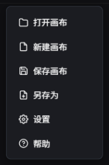
3 · 画布基础操作
| 操作 | 方式 |
|---|---|
| 缩放画布 | 鼠标滚轮（或左下角百分比旁的自适应屏幕） |
| 平移画布 | 按住 空格 拖动，或直接拖动空白处 |
| 上传图片 | 把图片文件拖入画布，或复制截图后 Ctrl+V 直接粘贴 |
| 选择 | 点击对象；空白处拖动框选多个对象 |
| 移动 | 拖动已选中的对象 |
| 复制 / 剪切 | Ctrl+C / Ctrl+X（对选中的图片与节点生效） |
| 粘贴 | Ctrl+V：剪贴板里有外部图片时优先粘贴图片，否则粘贴内部复制的对象 |
| 删除 | Delete 删除选中对象（节点连线会一并清理） |
| 添加节点 | 画布空白处右键，选择节点类型 |
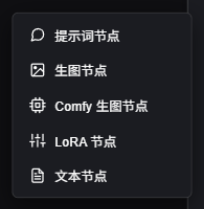
4 · 提示词节点
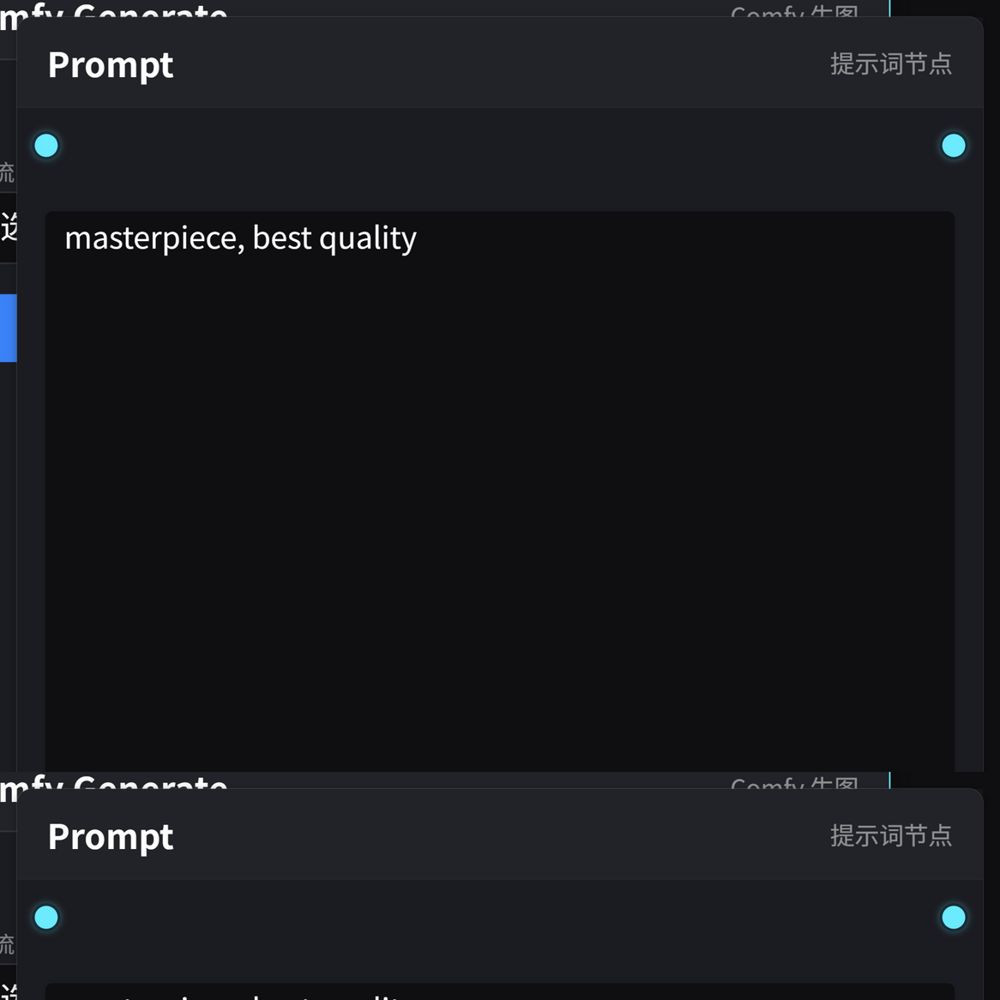
提示词节点是画布上的可视化提示词容器。右键菜单创建后直接输入文字； 它有两个端口：左端口接收内容，右端口输出给下游。
串联与合并
多个提示词节点可以串联（A 的右端口连 B 的左端口），生图节点会沿链路把 所有节点文本合并为一条提示词，段间空行、拼接处自动补逗号 （区分中英文，详见第 8 章）。
参考图与 @图片N 引用
把画布图片连到提示词节点的左端口，节点顶部会出现参考图缩略图条，
每张图带序号徽标（①②③…），顺序即发送给生图 API 的参考图顺序。
点击缩略图会在光标处插入 @图片N 引用标记（正文中以青色高亮显示），
告诉模型这张图应该用在哪里。
5 · 技能系统
提示词节点底部有技能栏：左边下拉选择技能，右边圆形按钮执行。 技能会调用聊天模型处理节点文字（和连入的参考图），结果直接替换节点内容。
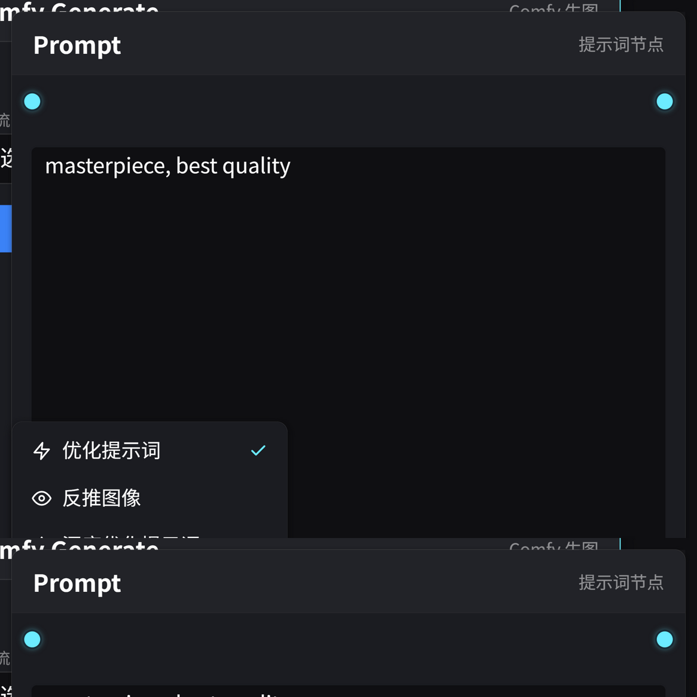
内置技能
- 优化提示词：扩写与补细节；
- 反推图像：连线一张图，让模型反推出提示词。
自定义技能（data/skills/*.md）
在项目的 data/skills/ 文件夹里放一个 .md 文件，
刷新页面即生效，无需重启。文件名 = 技能 id。
文件由头文件（元数据）和正文（指令）组成：
头部用两行 --- 包裹，正文就是发给模型的指令。
---
id: translate-en
name: 翻译提示词
icon: globe
inputText: true
inputImages: false
---
你是绘画提示词翻译专家。把用户发来的提示词翻译成英文，
只输出翻译结果，不要任何解释。头文件字段说明
| 字段 | 必填 | 说明 |
|---|---|---|
id | ✓ | 唯一标识，仅字母/数字/下划线/连字符，与文件名一致 |
name | ✓ | 技能下拉里显示的名称（最长 50 字） |
icon | 图标键名：zap eye type star globe heart flag，缺省 star | |
inputText | 是否把节点文字发给模型（默认 false） | |
inputImages | 是否把连入节点的参考图发给模型（默认 false，可选输入） | |
requireImages | 是否必须连线参考图（为 true 且没连线时拒绝执行） |
6 · 生图节点
生图节点没有右端口，只接收上游提示词。有两条平行链路：
LLM 生图节点
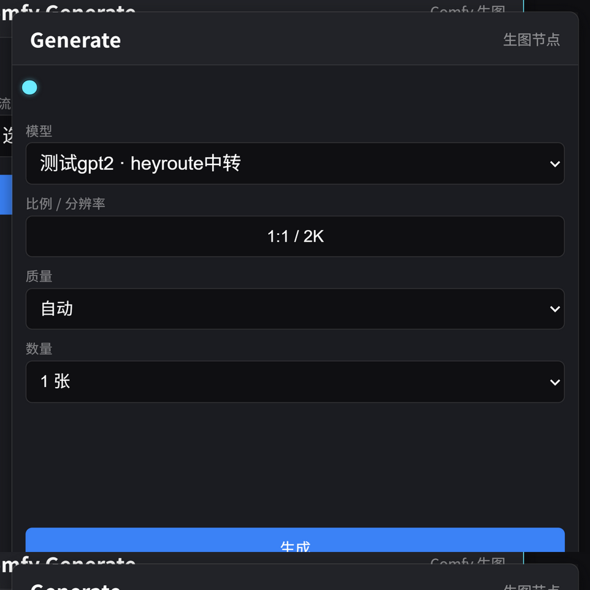
调用 API 生图模型（在设置里配置厂商与模型，见第 11 章）。 数量为 1-8 张，多张时并发请求，每张独立出图。
Comfy 生图节点
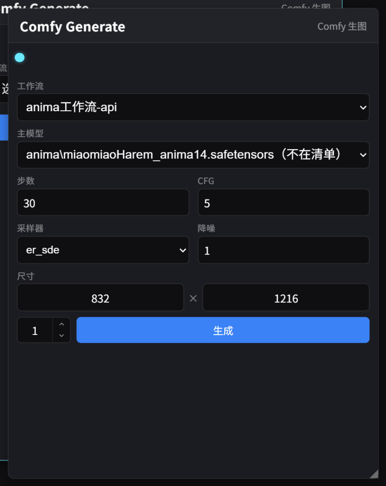
选择一个 ComfyUI 工作流后，节点会自动扫描工作流 JSON， 把里面可调的参数渲染成表单：主模型、模板内嵌 LoRA（带启用开关）、 步数+CFG、采样器+降噪、尺寸、数量——工作流里有什么就显示什么。 生成时参数由后端注入工作流后提交 ComfyUI。
- 数量 = 独立任务数：数量 N 会向 ComfyUI 队列循环入队 N 个任务 （每个任务独立随机种子），跑完一张立刻回传落一张；
- 某张提交失败会自动中止剩余任务，已完成的不受影响；
- 超过 100 张时会弹窗确认，防止误操作刷爆队列；
- 生成结果按占位图先进先出逐张替换，占位图位置即出图位置。
7 · LoRA 节点
LoRA 节点串在提示词链路中（提示词 → LoRA → Comfy 生图），可以不断 「+ 添加 LoRA」堆叠多个条目，每条包含：
- 文件下拉：来自 ComfyUI 的 lora 清单；选空 = 此条不生效；
- 模型强度 / CLIP 强度：数值输入框。
提交时由后端以「图拼接」方式动态注入，追加在工作流模板内嵌 LoRA 之后（叠加语义）。注意 LoRA 只对 Comfy 生图链路生效，LLM 生图不涉及。
8 · 提示词合并规则
「多个提示词节点」与「面板双正面框」共用同一套合并规则：
- 每段先去除首尾空白，空段剔除；
- 段与段之间用空行分隔；
- 拼接处自动补逗号，并区分中英文：
| 前段结尾 | 拼接处 |
|---|---|
已有 ， 或 , | 不补 |
| 中文字符（如「……咖啡店」） | 补全角 ， |
英文/数字/符号（如 ...quality） | 补半角 , |
例：框 1 = masterpiece, best quality，
框 2 = 1girl, coffee shop，合并发送结果为：
masterpiece, best quality,
1girl, coffee shop9 · 右侧面板
Comfy 模式
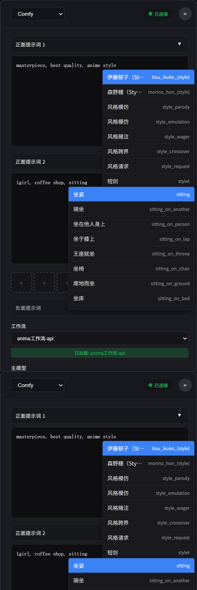
- 正面提示词 1 / 2：两个独立输入框，均可折叠（标题栏点击）， 状态自动记忆。框 1 适合放质量/画风类长期提示词，框 2 放人物动作等内容。 运行时两框自动空行 + 补逗号合并（见第 8 章）；
- 图片缩略图槽位：槽位数量跟随所选工作流里的取图节点数 （0-3 个，纯文生图工作流自动隐藏），点击上传、点 × 清除； 对应 ComfyUI Edit 类工作流的取图节点；
- 负面提示词：默认折叠；
- 工作流：下拉选择，选后下方出现动态参数区；
- 数量步进器：运行按钮左侧，上下箭头步进或直接键入（1-9999）， 超过 100 会弹窗确认。
LLM 对话模式
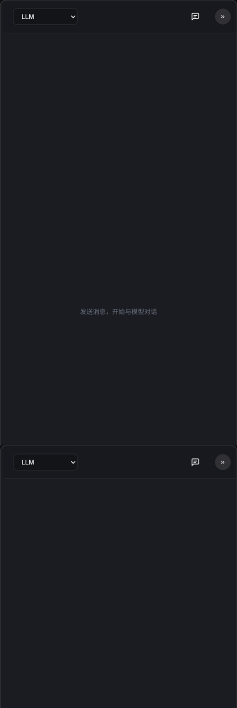
- 选择对话模型（在设置的 API 页配置）后直接聊天；
- 支持图片附件多模态输入；对话生成的图片可拖回画布继续加工；
- 点击图片可打开灯箱全屏预览；
- 选择生图模型时会出现比例/分辨率选择面板。
pi 编码智能体模式
模型下拉选择置顶的 pi 编码智能体即进入 pi 模式： pi 是一个能操作画布的编码智能体，通过读写画布、跑 ComfyUI 工作流、 资产检索等工具调用自动完成任务（如「跑某工作流生成三张分镜」）。
- 底层模型与权限：pi 实际调用的模型在 设置 → 通用 →「pi 使用的模型」选择；权限分级（只读 / 标准 / 完整）同页；
- 分阶段输出：回复按「思考 / 工具调用 / 最终回答」分块渲染， 工具块可折叠（默认展开），右侧标已完成 / 失败；
- 执行中指示器：任务运行期间最新消息框下方有转圈图标 + 「pi 执行中…」；长沉默（长工具、长模型调用）也代表还在工作，请耐心等待；
- 失败与卡死：回合失败会附说明与 ↻ 重新继续 按钮 （点击重发上一条消息接续执行）；pi 疑似卡死时弹 [重启 pi 进程] / [继续等待] 双按钮由你决策——程序不会自动重启 pi；
- 会话与统计：每个画布存档绑定一个独立 pi 会话（重启后端历史仍在）； 对话顶部灰字显示实际调用模型与本次上下文统计（ctx = 总 token，CH = 缓存命中率）；
- 清空：垃圾桶按钮清屏的同时重置当前存档的 pi 会话（下条消息从头开始）。
10 · 文件与存档
- 保存画布 / 另存为：把当前画布（图片 + 节点 + 连线 + 提示词 + 视口）
存到
save/存档名/目录； - 打开画布：从存档列表恢复；
- 新建画布：清空当前画布与面板提示词（有确认框）；
- 自动保存：画布内容变化时自动快照到浏览器（IndexedDB）， 意外刷新后自动恢复；
- 实时保存：同时把画布实时写入本地磁盘
data/autosave/，顶栏显示最近保存时间； 启动时若检测到磁盘上有未收尾的会话，会弹窗询问是否恢复。
11 · 图像工具
点击画布上的图片会出现浮动工具栏，提供两个本地图像工具：
- 高清放大：调用本地 Real-ESRGAN（Vulkan GPU 加速）， 放大结果落在画布上；
- AI 抠图：本地 RMBG-2.0 模型推理（onnxruntime）， 去除背景；模型文件可在设置里下载管理。
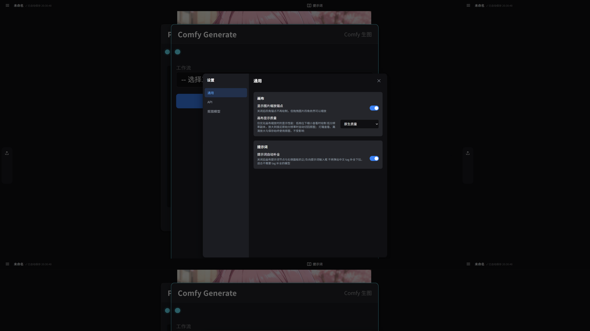
12 · 设置详解
通用
- 显示图片缩放锚点：关闭后四角锚点不绘制，但缩放功能保留；
- 画布显示质量：缩小查看时绘制低分辨率副本提升性能 （放大/保存始终用原图）；
- 提示词自动补全：开关画布节点与面板输入框的中文 tag 补全；
- pi 使用的模型：pi 编码智能体实际调用的底层模型 （仅列出对话类模型，生图/视频模型不可选）；
- pi 权限分级：只读 / 标准 / 完整，控制 pi 工具调用的放行范围。
API
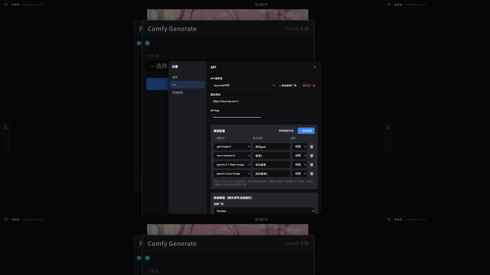
内置提供商可直接填 Key；也支持添加自定义 OpenAI 兼容厂商（端点 + Key + 模型列表）。 配置好后按用途绑定模型：对话 / 生图各用哪个模型。
抠图模型
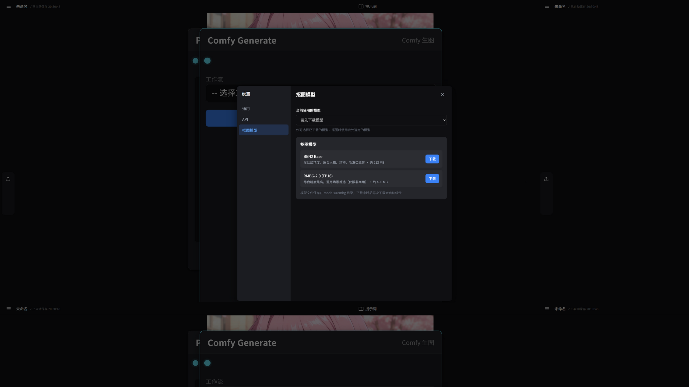
13 · 常见问题
| 现象 | 处理 |
|---|---|
| 状态灯「未连接」 | 确认 ComfyUI 已启动且地址为 127.0.0.1:8188（自定义地址用环境变量 COMFY_API_URL） |
| 模型下拉显示「不在清单」 | 该模型文件已被删除或改名——重新在清单里选择现存的模型，并建议重存一次工作流模板 |
| 运行提示「缺少提示词」 | 面板正面提示词为空，先填写；画布节点则需连入提示词节点 |
| 补全下拉没弹出 | 检查设置 → 通用 → 提示词自动补全是否开启；首次使用需加载词典（约 14MB，之后走本地缓存） |
| 中文提示词出图效果差 | CLIP 架构模型只认英文 tag——用补全或技能转英文；Wan / Z-Image / Qwen 系可直接中文 |
| 端口 8080 被占用 | 结束占用进程，或修改 server.js 的监听端口后重启 |
| 生成很久没动静 | 看 ComfyUI 界面的队列状态；大数量是逐任务排队，跑完一张落一张 |
| pi 很久没新输出 | 先看消息框下方的转圈「pi 执行中…」指示器——长工具/长模型调用可能沉默数分钟仍在工作；若弹「疑似卡死」说明，按按钮选择 [重启 pi 进程]（自动拉起并接续会话）或 [继续等待]；进程生命周期可查 data/pi/agent.log |
| pi 对话顶部灰字是什么 | 本次调用的实际模型 + 上下文统计：ctx 为单次调用总 token，CH 为提示词缓存命中率（命中高＝计费便宜），不代表故障 |
| 想让 pi 忘掉历史重来 | LLM 窗口垃圾桶按钮：清屏同时重置当前存档的 pi 会话 |
README.md 与 依赖.txt。